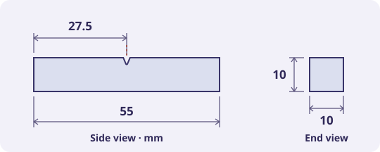
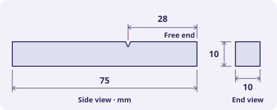
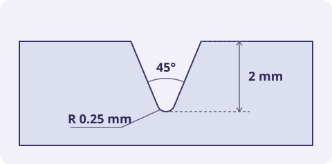

Charpy mounting
Plan view · simply supported
Rest the bar against two anvils, center the notch between them, and strike the face opposite the notch.
Metallic Charpy V-notch · ASTM E23-25 / ISO 148-1:2016
Virtual experiment
Break a V-notched metal bar with a pendulum. Compare how Charpy and Izod mount the bar, then use the pendulum’s rebound to find the energy absorbed in the impact.
Vary temperature in Charpy mode to break specimens from the same steel model at different temperatures.
Run an empty swing to measure the pendulum’s energy loss with no specimen.
Angles are measured from the downward vertical.
Plan view · simply supported
Rest the bar against two anvils, center the notch between them, and strike the face opposite the notch.
Metallic Charpy V-notch · ASTM E23-25 / ISO 148-1:2016
A specimen that absorbs more energy leaves the pendulum with a smaller rebound angle.
The teaching model uses the empty swing as a fixed correction for machine losses. The energy readings and fracture motion are illustrative.
Charpy · Ferritic steel · Absorbed energy against temperature
Run a specimen and record the result to build the data table.
| Trial | Method | Steel model | Temp. (°C) | β0 (°) | β (°) | Absorbed (J) |
|---|
To explore the ductile-to-brittle transition, compare Charpy points for the same ferritic steel model at low and high temperatures. Interpret comparisons within the same method and specimen geometry.
The drawings show nominal dimensions for full-size V-notch bars. Consult the applicable standard for tolerances, surface finish, specimen orientation, apparatus verification, and reporting.
ASTM E23-25 and ISO 148-1:2016

55 × 10 × 10 mm. The notch is centered at mid-length with an 8 mm ligament beneath it.
ASTM E23-25, metallic cantilever specimen

75 × 10 × 10 mm. The notch centerline is 28 mm from the free end and aligns with the top of the vise when mounted.

Both bars here use a 45° included angle, 2 mm depth, and 0.25 mm root radius. The remaining ligament is 8 mm. Notch geometry changes the stress concentration and can change the measured energy.
Metal standards. ASTM E23-25 covers Charpy and Izod. ISO 148-1:2016 covers the non-instrumented Charpy test for metals, including V- and U-notch specimens. Charpy reports should identify the striker edge radius (2 mm or 8 mm) separately from the specimen’s notch geometry.
Plastic standards. Charpy uses ASTM D6110 or ISO 179-1. Izod uses ASTM D256 or ISO 180. This lab uses metal specimens and reports absorbed energy in joules.
Let C = MgR, where M is the pendulum mass and R is the distance from the pivot to its center of mass. With angles measured from the downward vertical, the loss in gravitational potential energy between release and rebound is C(cos β − cos α).
A Charpy pendulum with C = 160 J is released from 150.00°. It rebounds to 148.60° on the empty swing and 100.00° after breaking a bar. Using degrees, the gross loss is about 110.8 J and the empty-swing loss is about 2.0 J. The specimen absorbs 108.8 J.
Impact absorbed energy characterizes a particular notched specimen and test condition. Plane-strain fracture toughness is measured by a separate test on a precracked specimen.